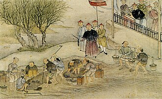
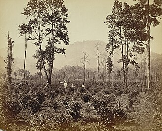

Part I · Imperialism · Chapter 1
Inherits: — · Feeds: Scramble for Africa (ch. 2), China 1911→49 (ch. 7)
Opium Wars
On the beach at Humen in the summer of 1839, Lin Zexu’s officials destroy more than twenty thousand chests of opium surrendered by British and American merchants. Within a year British warships are off the Guangdong coast. By 1842 Hong Kong Island has been ceded and five ports opened. Behind the war sits a quieter question: what was all that opium buying?

1 What the opium was buying
Britain’s side of this war begins with a leaf. In 1784 Parliament cut the duty on tea from roughly 119 per cent to 12½. Smuggling collapsed, legal imports jumped, and tea stopped being a luxury and became something a household bought weekly. The Treasury then depended on the duty, the East India Company depended on the trade, and all of it came from one country, which wanted silver and very little else.
Opium was the answer to that imbalance: a crop Britain could grow under Company monopoly in Bengal and Bihar, then sell into China against Qing bans. The silver from Chinese buyers paid for tea, silk and porcelain. The cargo therefore travelled in a circuit: opium from India to China, silver from China into Company hands, Chinese goods to Britain. The drug on the beach at Humen was one side of a shopping bill.
The Qing destruction of the surrendered chests in 1839 was followed by the First Opium War. The Treaty of Nanking ended it in 1842 with Hong Kong Island ceded, an indemnity paid and five treaty ports opened. Yet a war could open ports; it could not make a plant grow somewhere else. Within a decade Britain had gone after that problem too.
The Indian half of the answer had already begun, without theft. In 1823 Robert Bruce came across tea growing wild in Assam. His brother Charles spent the next fifteen years working out how to make it drinkable. The first eight chests of Assam tea were sold at auction in London on 10 January 1839, five months before Lin Zexu burned anything. Assam’s bush is a local variety, Camellia sinensis var. assamica. Indian tea did not begin with something taken out of China.
What was taken out of China was the other variety, and the knowledge. In 1848 the East India Company hired the botanist Robert Fortune to get both. He shaved his head, dressed as a traveller from a distant province and spent nearly three years in districts closed to foreigners: the green-tea hills of Zhejiang and Anhui, then the Wuyi range in Fujian, where black tea was made.
Fortune shipped roughly twenty thousand plants and seedlings to the Company’s Himalayan nurseries in sealed glazed boxes. The boxes, patented fifteen years earlier, could keep plants alive across an ocean. He also hired eight Chinese tea makers to bring their tools and show the Indian gardens how the leaves were handled. Along the way he settled an argument among British botanists: green tea and black tea are the same plant, treated differently after picking. His 1852 account, A Journey to the Tea Countries of China, describes the expedition in the tone of a walking holiday.

The hillside in that photograph was planted in those years. Archibald Campbell, the superintendent at Darjeeling, had put China tea seed in his garden around 1841. The first commercial gardens opened in the 1850s, as Fortune’s consignments and his tea makers reached the same mountains. That is why Darjeeling tastes unlike Assam. Assam grows the Indian plant; Darjeeling grows the Chinese one on a ridge in Bengal because it was carried there.
The circuit closed inside one lifetime. By 1888 Britain was importing more tea from India than from China, and China’s share of the market it had once held alone kept falling. India retained both crops. The Company’s opium factory at Ghazipur, which packed chests of the kind destroyed at Humen, still makes opiates under the Indian government. Tea travelled farther: it reached Kenya in 1903 as seed from India, and Kenya became the world’s largest exporter of black tea.
So the tea in many kitchens — Indian, Sri Lankan, Kenyan, whatever the box says — stands at the far end of this chapter. A Darjeeling packet contains Chinese stock growing on an Indian slope. The fighting did not move the plant. Fortune moved it nine years later, with a shaved head and glass boxes. Britain fought to keep buying Chinese tea, then built a supply that meant it would not have to.
2 The dates, briefly
- 1839: Lin Zexu oversees the destruction of surrendered opium at Humen, near Guangzhou.
- 1839–42: the First Opium War.
- 29 August 1842: the Treaty of Nanking cedes Hong Kong Island, requires an indemnity and opens five treaty ports.
- 1848–51: Robert Fortune’s Company-funded expedition moves tea plants and knowledge out of China.
- 1856–60: the Second Opium War, with Britain and France among the principals.
- October 1860: Anglo-French forces enter Beijing and burn the Old Summer Palace.
- 1888: British imports of tea from India exceed imports from China.
3 Six classrooms, six starting lines
A fifteen-year-old can meet this story at almost any point except the beginning. The six books whose syllabus reaches the 1840s agree that Britain fought China and that Hong Kong changed hands. Their order on the comparison ladder depends on when they start the clock: at victory, at the settlement, at the seizure of opium, at the trade that put it there, or at the Chinese attempt to stop it.
The British survey starts latest. Its Opium Wars are background to China after 1900, already under way and almost already won:
UK · Lowe 2013
“The British were first on the scene, fighting and defeating the Chinese in the Opium Wars (1839–42). They forced China to hand over Hong Kong and to allow them to trade at certain ports.”
Mastering Modern World History, 5th ed., p. 607 (China 1900–49 setup)Opium remains in the name but disappears from the grammar. Belarus also begins with the result: the English open China to Europeans and seize Hong Kong, while “Opium” sits in quotation marks. Italy and the United States begin one step earlier, with a Chinese seizure followed by British action. The Italian book leaves the Chinese official anonymous and calls the response an intervention. OpenStax names opium and says the forces were ordered to impose penalties and protect British merchants. None of these four accounts needs India.
The Chinese lesson starts earlier than all four. It prints the climb from 4,570 chests in 1800 to more than 40,000 in 1838, names Lin Zexu and Humen, and makes the British Parliament the body approving war. Its subject is an injury documented in quantities, decisions and an unequal treaty. But it does not follow the tea plant out of China.
India’s NCERT account is the shortest here and the only one that completes the commercial circuit:
IN · NCERT 2022+
“The Company used the silver to buy tea, silk and porcelain to sell in Britain.”
Themes in World History, Class XI · extract ~p. 178That sentence supplies the missing cargo. Yet NCERT has no Lin Zexu and no battlefield. Every account gets shorter by cutting a different side of the triangle: Britain can lose the drug, the middle accounts can lose the colony that grew it, China can stop at the national injury, and India can keep the trade while dropping the people and the fighting. Only one of eleven classrooms says what the opium silver bought. None follows the plant to the tea packet.
4 Credit and limits
NCERT (IN) earns the credit for keeping force, drug and cargo in four sentences; its triangle makes the larger story possible. But six pinned books are not “the world.” The Russian and Ukrainian volumes begin too late, the German booklet covers National Socialism, and Sudan’s book stays regional, so those absences are syllabus boundaries. None of the six accounts is military history, and together they print no number of dead. The Belarusian line placing Singapore inside this war may be a textbook error; the receipts preserve it exactly as printed.
The full comparison and receipts for this chapter
Now look up what your textbook calls it.